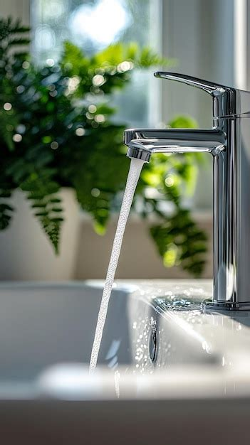

Akutte lekkasjer
Rask utrykning, midlertidig sikring og varig utbedring. Vi begrenser skadene og tar dialogen videre ved behov.
Rørlegger i Bergen · Døgnvakt
Akutt lekkasje, tett avløp eller planlagt oppussing? Vi rykker ut raskt, jobber ryddig og sørger for at du får et anlegg du kan stole på.
Tette rør, lekkasje eller vannskade? Jo tidligere du ringer, jo mindre blir skaden.
Ring oss med én gang – vi vurderer situasjonen og sier hva som er smartest å gjøre.
Enten det gjelder små reparasjoner eller større installasjoner, legger vi stolthet i presist arbeid, rene løsninger og god kommunikasjon.

Vi hjelper både privatpersoner, bedrifter og borettslag med alt innen vann, varme og sanitær.
Rask utrykning, midlertidig sikring og varig utbedring. Vi begrenser skadene og tar dialogen videre ved behov.
Rens av tette sluk, avløp og rør. Vi bruker riktig utstyr og sørger for at vannet renner som det skal.
Komplett rørleggerarbeid ved oppussing og nybygg. Vi jobber ryddig og koordinert med andre fag.
Gulvvarme, varmepumper og energieffektive løsninger som gir jevn varme og lavere strømforbruk.
Faste avtaler for bedrifter, borettslag og sameier. Vi sørger for at anleggene fungerer som de skal.
Varmtvannsberedere, armaturer, toaletter og annet utstyr. Vi bytter, tester og dokumenterer.
Vi vet at rørproblemer er stress. Derfor gjør vi alt vi kan for å gjøre det enkelt for deg.
Du slipper å lure på om noen faktisk kommer. Vi gir tydelige beskjeder og holder avtaler.
Vi forklarer hva vi gjør, hvorfor vi gjør det, og hva det vil koste – før vi setter i gang.
Du får dokumentasjon der det er relevant, slik at du står sterkere overfor forsikring og fremtidige eiere.
En enkel prosess – fra første telefon til ferdig jobb.
Ring oss eller send en forespørsel. Vi stiller noen spørsmål og vurderer hvor akutt situasjonen er.
Vi ser på anlegget, forklarer hva vi anbefaler og gir et overslag eller fastpris der det er mulig.
Vi møter til avtalt tid, jobber ryddig og sørger for at du vet hva som er gjort før vi drar.
Jo tidligere du tar kontakt, jo enklere er det ofte å løse problemet. Vi tar både små og store jobber.